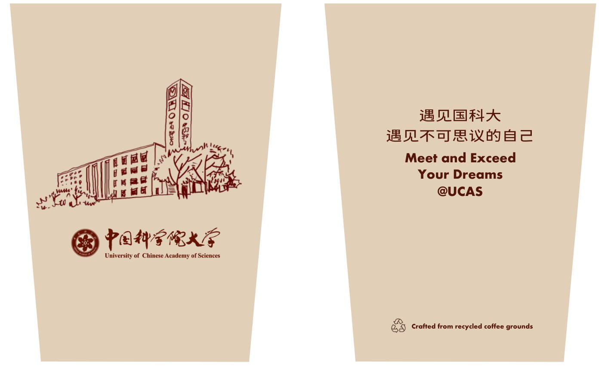
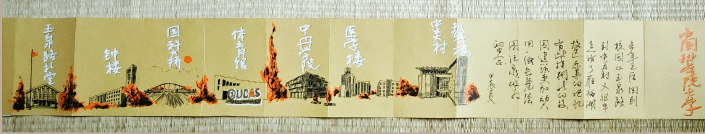
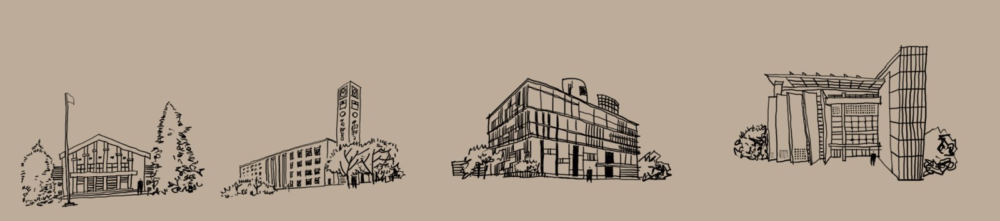
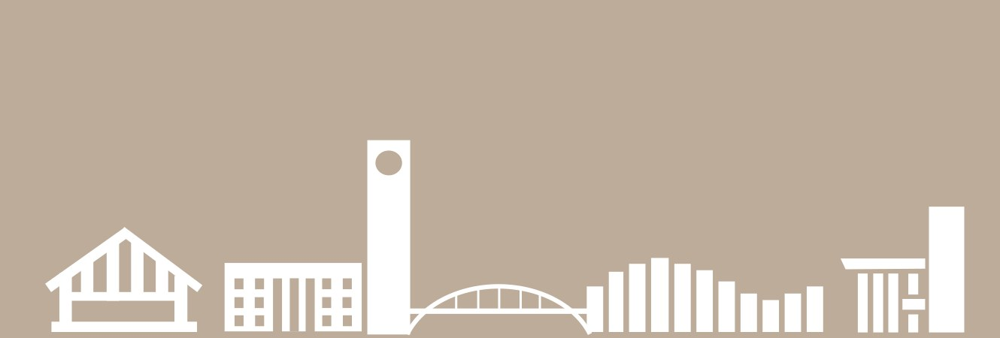

DESIGNED OBJECT
国科大礼品杯。
把校园记忆握在手里
从一幅校园长卷出发，把玉泉路、中关村与雁栖湖的建筑记忆带进日常物件。让校友的观看，成为杯身和包装上的另一种风景。


01 / 起点
从重返校园开始
王安毕业多年后重返校园，以长卷记录三个校区的建筑与景色。走过的路径和熟悉的建筑，成为这个系列的图像起点。

02 / 转化
从长卷中取出建筑
重新选择、描绘有辨识度的建筑，让连绵的校园景色转化为适合杯身阅读的图案。

03 / 杯身
让日常物件承载记忆
在杯身上安排建筑图像与文字。设计以咖啡渣材质为方向，把校园记忆与循环利用的主题联系起来。
04 / 包装
三个校园，一个整体
将校园建筑提炼成连续的几何图形，在包装上延续长卷的观看方式。此图展示包装方案局部。

- 创作起点
- 王安的校园长卷与建筑速写
- 内容
- 杯身图案与包装视觉设计
- 呈现
- 礼品杯平面设计方案
让一段关于校园的记忆，继续出现在生活里。
交流设计合作